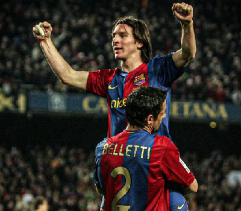

Competições e Estatísticas Por Clube
Competiçõess: Supercopa Europeia ,La Liga, Liga dos Campeões, Copa del Rey, Supercopa da Espanha
Títulos: Supercopa da Espanha
Supercopa Europeia: 1 jogos , 90 minutos jogados , 0 gol(s) , 0 assistência(s)
La Liga: 26 jogos , 2005 minutos jogados , 14 gol(s) , 2 assistência(s)
Liga dos Campeões: 5 jogos , 385 minutos jogados , 1 gol(s) , 0 assistência(s)
Copa del Rey: 2 jogos , 166 minutos jogados , 2 gol(s) , 1 assistência(s)
Supercopa da Espanha: 2 jogos , 120 minutos jogados , 0 gol(s) , 0 assistência(s)
Total: 46 jogos , 3579 minutos jogados , 21 gol(s) , 7 assistência(s)
Destaques: Primeiro Hat-trick da sua carreira foi no "El Clásico" contra o Real Madrid e gol icônico contra o Getafe, comparado ao de Maradona.
